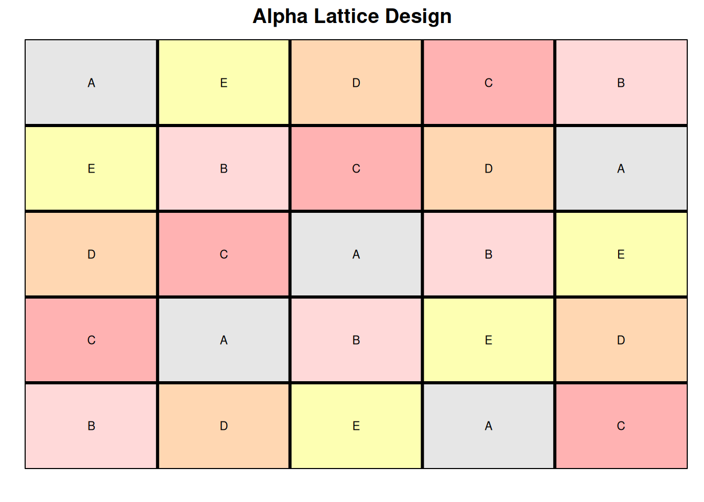
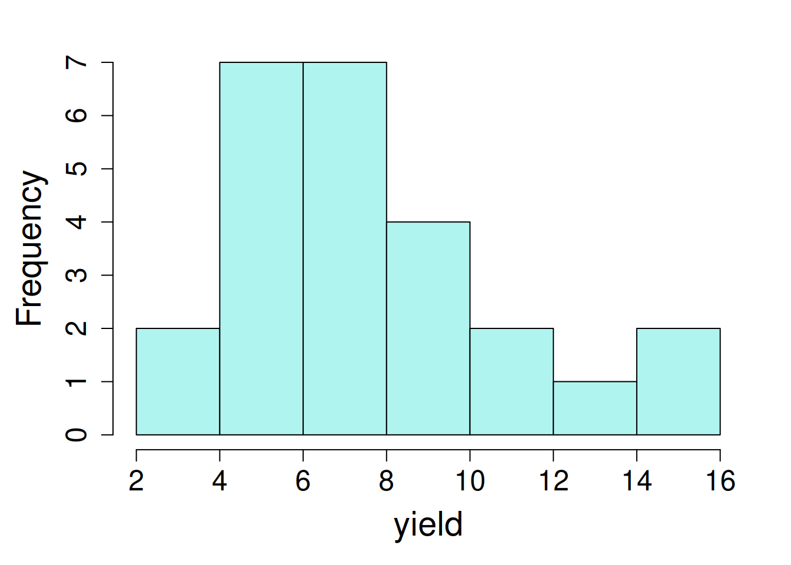

library(lme4); library(lmerTest); library(emmeans); library(performance)
library(dplyr); library(broom.mixed)11 Latin Square Design
11.1 Background
Latin square design is a spatial adjustment techniquement that assumes a row-by-column layout for the experimental units. Two blocking factors are are assigned, one to the rows and one for the columns of a square. This allows blocking across rows and columns to reduce the variability in those spatial units in the trial. The requirement of Latin square design is that all ‘t’ treatments appears only once in each row and column and number of replications is equal to number of treatments.
Advantages of Latin square design are:
- The design is particularly appropriate for comparing t treatment means in the presence of two sources of variation (row & column), each measured at t levels.
Disadvantages:
A Latin square can be constructed for any value of t, however, it is best suited for comparing t treatments when \(5≤ t ≤ 10\).
Additional sources of variability reduces efficiency and tend to inflate the error term which makes it more difficult to detect differences among the treatments.
There must be no interaction of rows and columns with treatment effects.
The statistical model for the Latin square design:
\(Y_{ijk} = \mu + \alpha_i + \beta_j + \gamma_k + \epsilon_{ijk}\)
where, \(\mu\) is the experiment mean, \(\alpha_i\) represents treatment effect, \(\beta\) and \(\gamma\) are the row- and column-specific effects.
Like the other designs, the residuals, \(\epsilon_{ijk}\), are assumed to independently and identically distributed, following a normal distriution. The model also assumes no interactions between the blocking factors (rows and columns) with the treatments.
11.2 Example Analysis
Let’s start the analysis first by loading the required libraries:
library(nlme); library(broom.mixed); library(emmeans); library(performance)
library(dplyr)The data used in this example is from the agridat package (data set “goulden.latin”). In this experiment, 5 treatments were tested to control stem rust in wheat (A = applied before rain; B = applied after rain; C = applied once each week; D = drifting once each week. E = not applied).
dat <- read.csv(here::here("data", "goulden_latin.csv"))| trt | treatment factor, 5 levels |
| row | row position for each plot |
| col | column position for each plot |
| yield | wheat yield |
11.2.1 Data integrity checks
- Check structure of the data
First, let’s verify the class of variables in the data set using the str() function in base R
str(dat)'data.frame': 25 obs. of 4 variables:
$ trt : chr "B" "C" "D" "E" ...
$ yield: num 4.9 9.3 7.6 5.3 9.3 6.4 4 15.4 7.6 6.3 ...
$ row : int 5 4 3 2 1 5 4 3 2 1 ...
$ col : int 1 1 1 1 1 2 2 2 2 2 ...Here yield and trt are classified as numeric and factor variables, respectively, as needed. But we need to change ‘row’ and ‘col’ from integer to factors (character is also a valid choice).
dat1 <- dat |>
mutate(row = as.factor(row),
col = as.factor(col))- Inspect the independent variables
Next, to verify if the data meets the assumption of the Latin square design, let’s plot the field layout for this experiment.

This looks great! Here we can see that there are an equal number of treatments, rows, and columns (5). Treatments were randomized in such a way that one treatment doesn’t appear more than once in each row and column.
- Check the extent of missing data
The next step is to check if there are any missing values in response variable.
colSums(is.na(dat)) trt yield row col
0 0 0 0 No missing values are detected in this data set.
- Inspect the dependent variable
Before fitting the model, let’s create a histogram of response variable to see if there are extreme values.

hist(dat1$yield, main = NA, xlab = "yield")11.2.2 Model fitting
Here we will fit a model to evaluate the impact of fungicide treatments on wheat yield with trt as a fixed effect and row and col as a random effects.
m1_a <- lmer(yield ~ trt + (1|row) + (1|col),
data = dat1,
na.action = na.exclude)
summary(m1_a) Linear mixed model fit by REML. t-tests use Satterthwaite's method [
lmerModLmerTest]
Formula: yield ~ trt + (1 | row) + (1 | col)
Data: dat1
REML criterion at convergence: 89.8
Scaled residuals:
Min 1Q Median 3Q Max
-1.3994 -0.5383 -0.1928 0.5220 1.8429
Random effects:
Groups Name Variance Std.Dev.
row (Intercept) 1.8660 1.3660
col (Intercept) 0.2336 0.4833
Residual 2.3370 1.5287
Number of obs: 25, groups: row, 5; col, 5
Fixed effects:
Estimate Std. Error df t value Pr(>|t|)
(Intercept) 6.8400 0.9420 11.9446 7.261 1.03e-05 ***
trtB -0.3800 0.9669 12.0000 -0.393 0.7012
trtC 6.2800 0.9669 12.0000 6.495 2.96e-05 ***
trtD 1.1200 0.9669 12.0000 1.158 0.2692
trtE -1.9200 0.9669 12.0000 -1.986 0.0704 .
---
Signif. codes: 0 '***' 0.001 '**' 0.01 '*' 0.05 '.' 0.1 ' ' 1
Correlation of Fixed Effects:
(Intr) trtB trtC trtD
trtB -0.513
trtC -0.513 0.500
trtD -0.513 0.500 0.500
trtE -0.513 0.500 0.500 0.500m1_b <-lme(yield ~ trt,
random = list(one = pdBlocked(list(
pdIdent(~ 0 + row),
pdIdent(~ 0 + col)))),
data = dat %>% mutate(one = factor(1)))
summary(m1_b)Linear mixed-effects model fit by REML
Data: dat %>% mutate(one = factor(1))
AIC BIC logLik
105.2465 113.2124 -44.62327
Random effects:
Composite Structure: Blocked
Block 1: row
Formula: ~0 + row | one
row
StdDev: 0.7529153
Block 2: col
Formula: ~0 + col | one
col Residual
StdDev: 2.708438e-05 1.737645
Fixed effects: yield ~ trt
Value Std.Error DF t-value p-value
(Intercept) 8.987259 1.046448 20 8.588351 0.0000
trtB -0.380000 1.098983 20 -0.345774 0.7331
trtC 6.280000 1.098983 20 5.714374 0.0000
trtD 1.120000 1.098983 20 1.019124 0.3203
trtE -1.920000 1.098983 20 -1.747070 0.0960
Correlation:
(Intr) trtB trtC trtD
trtB -0.525
trtC -0.525 0.500
trtD -0.525 0.500 0.500
trtE -0.525 0.500 0.500 0.500
Standardized Within-Group Residuals:
Min Q1 Med Q3 Max
-1.78646821 -0.20717699 -0.07394724 0.26228203 2.35462748
Number of Observations: 25
Number of Groups: 1 11.2.3 Check Model Assumptions
Evaluate model residuals by using check_model() function from the performance package.
check_model(m1_a, check = c('qq', 'linearity', 'reqq'), detrend=FALSE, alpha = 0)
plot(m1_b, resid(., scaled=TRUE) ~ fitted(.),
xlab = "fitted values", ylab = "studentized residuals")
qqnorm(residuals(m1_b))
qqline(residuals(m1_b))
These visuals indicate that the assumptions of the linear model have been met.
11.2.4 Inference
We can now proceed to ANOVA. In this case, we will use anova() with type = 1 or type = "sequential" for lmer() and lme() models, respectively.
anova(m1_a, type = "1")Type I Analysis of Variance Table with Satterthwaite's method
Sum Sq Mean Sq NumDF DenDF F value Pr(>F)
trt 196.61 49.152 4 12 21.032 2.366e-05 ***
---
Signif. codes: 0 '***' 0.001 '**' 0.01 '*' 0.05 '.' 0.1 ' ' 1anova(m1_b, type = "sequential") numDF denDF F-value p-value
(Intercept) 1 20 163.65015 <.0001
trt 4 20 16.27868 <.0001Here we observed a statistically significant impact of fungicide treatment on crop yield. Let’s have a look at the estimated marginal means of wheat yield with each treatment using the emmeans() function.
emmeans(m1_a, ~ trt) trt emmean SE df lower.CL upper.CL
A 6.84 0.942 11.9 4.79 8.89
B 6.46 0.942 11.9 4.41 8.51
C 13.12 0.942 11.9 11.07 15.17
D 7.96 0.942 11.9 5.91 10.01
E 4.92 0.942 11.9 2.87 6.97
Degrees-of-freedom method: kenward-roger
Confidence level used: 0.95 emmeans(m1_b, ~ trt)Warning in qt((1 - level)/adiv, df): NaNs produced trt emmean SE df lower.CL upper.CL
A 8.99 1.05 0 NaN NaN
B 8.61 1.05 0 NaN NaN
C 15.27 1.05 0 NaN NaN
D 10.11 1.05 0 NaN NaN
E 7.07 1.05 0 NaN NaN
Degrees-of-freedom method: containment
Confidence level used: 0.95 We see that wheat yield was higher with ‘C’ fungicide treatment compared to other fungicides applied in this study, indicating that ‘C’ fungicide was more efficient in controlling stem rust in wheat.
CI with lme
The confidence intervals were not estimated through emmeans() from the lme() model due to limitations in how the model has to be specified in nlme and how emmeans estimates confidence intervals from a linear modelling object.